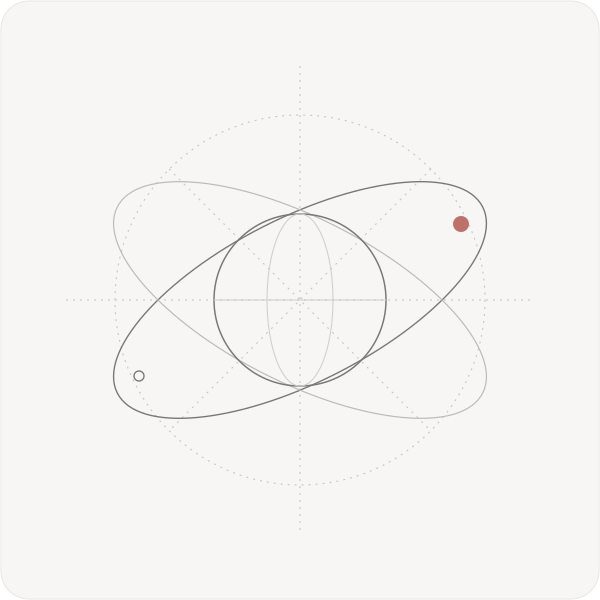
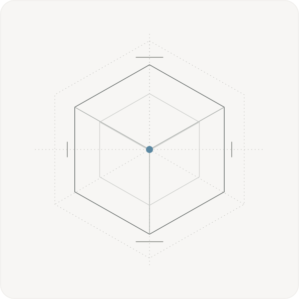
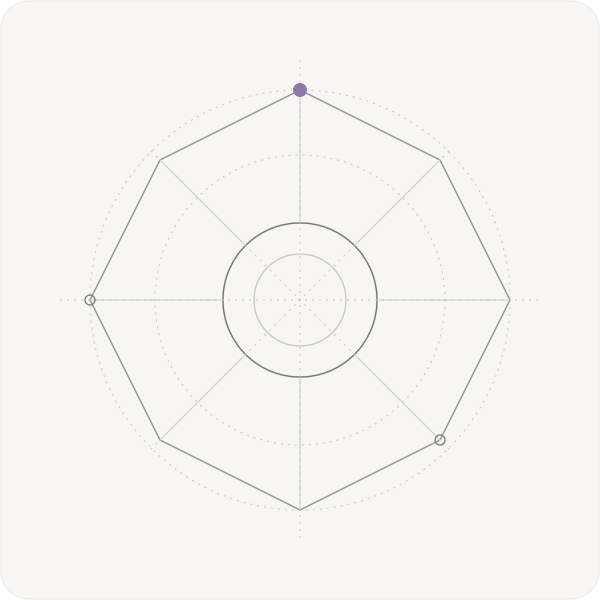
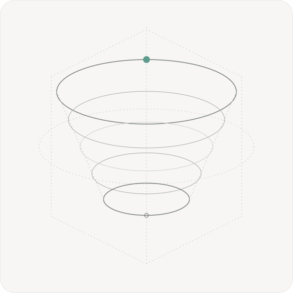

Geometric wireframe illustrations
Four original SVGs inspired by the thin-line visual language in your reference. Hover over each card.




Four original SVGs inspired by the thin-line visual language in your reference. Hover over each card.



